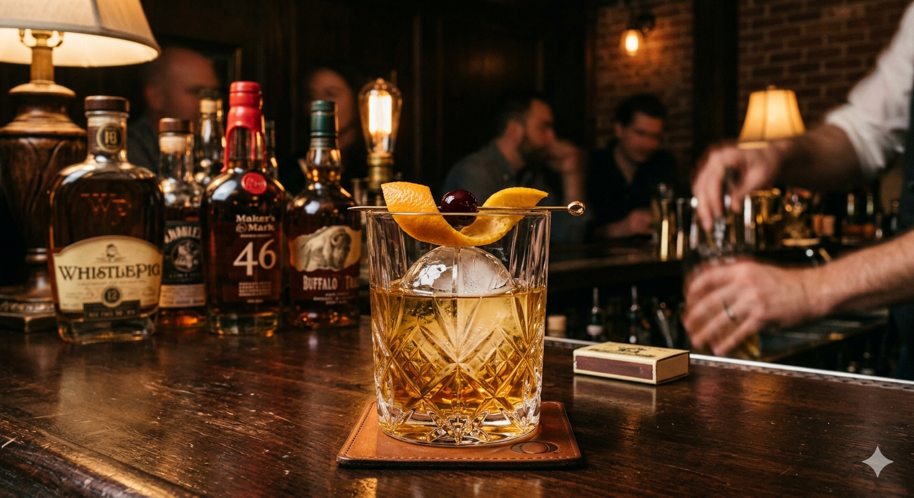

Old Fashioned Recipe
Home

Description
Best ai old fashioned you've ever drank with your eyes.
It's not actually real. Just an image.
Ingredients
- bourbon
- sugar cube
- bitters
- ice
- TLC
Steps
- Muddle sugar cube and bitters together to a paste.
- Pour 2oz bourbon into mixer with paste.
- Add ice and stir for about 10 sec.
- Strain into drinking glass over fresh balled ice.